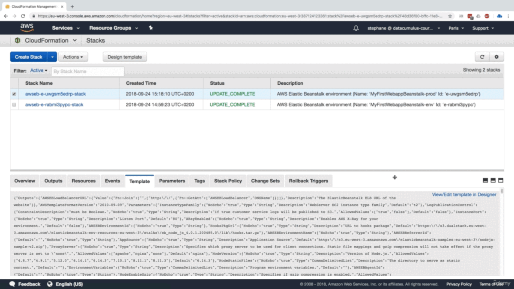
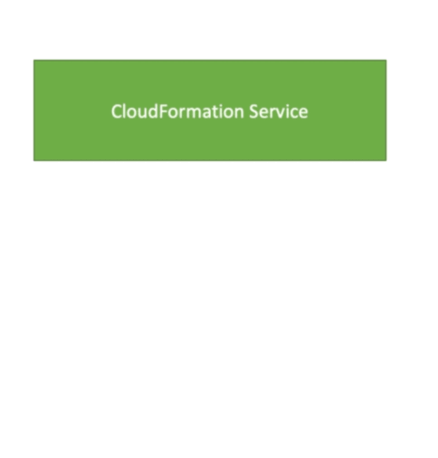
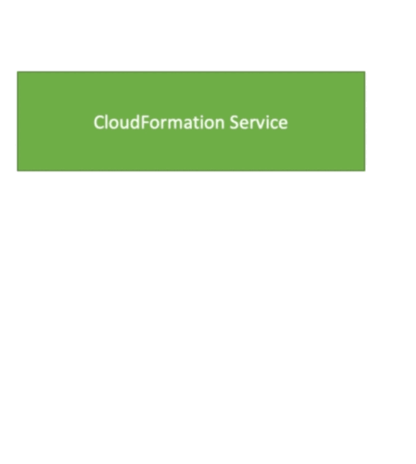

CloudFormation-Udemy
Table of Contents
- Overview
- CloudFormation Building Blocks
- Create Stack Hands On
- Update and Delete Stack
- Yaml Crash Course
- Diffenent Type of Resources
- Resources
- Parameters in CloudFormation
- Mapping in CloudFormation
- Output in CloudFormation
- Conditions in CloudFormation
- Intrinsic Function
- User Data
- cnf-init :
CloudFormation::Init - cnf-signal and wait condtion
- TODO cnf-signal
falures troubleshoot
Overview
Infrastructure as Code
- Currently, we have been doing a lot of manual work in aws
- All this manual work will be very tough to reproduce
- In another region
- In another AWS account
- Within the same region if everything was deleted
- Wouldn't it be great if all our infrastructure was code ? (Yes for his terraform, cloud formation, Infrastructure as code)
- That code would be deployed and create/ Update / delete our infrastructure
What is CloudFormation
- Cloud Formation is a declarative way of outlining your AWS Infrastructure, for any resources (most of them are supported)
- For example, within a CloudForamtion template, you say:
- I want a security group
- I want two EC2 machines using this security group
- I want tow Elastic IPs for these EC2 machines
- I want an S3 Bucket
- I want a load blancer (ELB) infront of these machines
- The CloudFormation creates those for you, in the right orde, with the exact configuration that you specify
Benefits of AWS CloudFormation
- Infrastructure as code
- No resource are manually created, which is execellent for control
- The code can be version controlled for example using git
- Changes to the infrastructure are reviwed through code
- Cost
- Each resources within the stack is staggged with an identifier so you can easily see how much a stack costs you
- You can estimate the costs of your resources using CloudFormation template
- Saving Strategy: In Dev, you could automation deletion of templates at 5 PM and recreatd at 8 AM, saftely
- Productivity :
- Ability to destroy and re-create an infrastructure on cloud on the fly
- Automated generation of Diagram for your template
- Declarative programming(no need to figure out ordering and orchestration)
Separation of concern: Create many stacks for many apps, many layers. Ex:
- VPC stack
- Network stack
- App stack
- Don't re-invent the wheel
- Leverage existing templates on the web !
- Leverage the documentation
How CloudFormation Works
- Templates have to be
- uploaded in S3 and then referenced in CloudFormation
- uplaoded as file
- To update a template, we can't edit previous ones. We have to re-uplaod a new version of the template to AWS
- Stackts are identified by a name
Deploying CloudFormation Templates
- Manual way:
- Editing templates in the CloudForamtion Designer
- Using the console to input parameters, etc
- Automated way :
- Editiong templates in a Yaml file
- Using the AWS CLI to deploy the templates
- Recommended way when you fully want to automate your flow
CloudFormation Building Blocks
Templates componets (one course section for each):
- Resources : Your AWS resources declared in the template (MANDATORY)
- Paramters : Dynamic inputs for your tempalate
- Mappings : Static varaibles for your template
- Outputs : Reference to what has been created
- Conditionals : List of conditions to perform resource creation
- Metadata :
- Helpers:
- References :
- Functions :
Note:
- This is an introduction to CloudFormation (OVER-VIEW NOT DEEP ONLY FOR EXAMS)
- It can take over 3 hours to properly learn and master Cloudformation
- This section is meants so you get a goog idea of how it works
- We'll be slightly less hands-on than in other section
- We'll learn everything we need to answer question for the exam
- The exam does not require you to actually write CloudFormation
- The exam expects you to understand how to read CloudFormation
Create Stack Hands On
Introduction Example
- We're going to create a simple EC2 instance
- Create and add an Elastic IP to it
Create and add Two Security Group to it
Create a EC2 instance
---
Resources:
MyInstance:
Type: AWS::EC2::Instance
Properties:
AvailabilityZone: us-east-1a
InstanceType: t2.small
ImageId: t2.micro
Update and Delete Stack
Update your stack
---
Parameters:
SecurityGroupDescription:
Description: Security Group Description
Type: String
Resources:
MyInstance:
Type: AWS::EC2::Instance
Properties:
AvailabilityZone: us-east-1a
InstanceType: t2.small
ImageId: ami-a4c7edb2
SecurityGroup:
- !Ref SSHSecurityGroup
- !Ref ServerSercurityGroup
# Elatic Ip for our instance
MyEIP:
Type: AWS:EC2::IP
Properties:
InstanceId: !Ref MyInstance
# EC2 security Group
SSHSecurityGroup:
Type: AWS::EC2:SecurityGroup
Properties:
GroupDescription: Enable SSH access via port 22
SecurityGroupIngress:
- CidrIp: 0.0.0.0/0
FromPort: 22
IpProtocol: tcp
ToPort: 22
ServerSercurityGroup:
Type: AWS::EC2:SecurityGroup
Properties:
GroupDescription: !Ref SecurityGroupDescription
SecurityGroupIngress:
- IpProtocol: tcp
FromPort: 80
ToPort: 80
CidrIp: 0.0.0.0/0
- IpProtocol: tcp
FromPort: 22
ToPort: 22
CidrIp: 192.168.1.1./32
This will update the existing stack (Resources in aws) and delete, create and update respectively

Yaml Crash Course
- Yaml and Json are language use for CloudFormation
- JSON is horrible for CF
- YAML is great in so many ways
- Let's learn bit about it!
- Yaml support
Key Value Pair (Dict in python )
- Nested objects
invoice: 3483 # we can add comments date: 2001-01-23 bill-to: given : Chris family: Dumars address: line: | 458 Walkman Dr. Sute city: Royal Oak state: MI postal: 48046Supports Array
products: - sku : BL394D quantity: 4 description: Basketball price: 450.00 - sku : BL443H quantity: 1 description: Super Hoop price: 2392.00
Diffenent Type of Resources
There are different Types of Resoures
- All the resources can be found here . https://docs.aws.amazon.com/AWSCloudFormation/latest/UserGuide/aws-template-resource-type-ref.html
- EC2 Instance, Auto Scaling
- ECR, ECS
- Security Group
- Elastic IP
- VPC
- Subnet
- Route Table
- Subnet Route Table Association
- Internet Gateway
- VPC Gateway Attachment
- Code Build -Code Build IAM Role
- Code Deploy
- Code Deploy Deploy Deployment Group
- Code Deploy Deployment
- Code Deploy IAM Role
- Code Pipeline
- Code Pipeline IAM Role
- Code Pipeline Pipeline
- SNS
- Load Balancer
- Elastic Beanstalk
- Elastic Load Balancing
- Elastic Load Balancing V2
- ElastiCache
- Event Bridge EventBridge EventBridge Pipes EventBridge Scheduler EventBridge Schemas
- EFS, EKS
Resources
What are resources ?
- Resources are the core of your CloudFormation template (Mandatory)
- They represent the different AWS Components that will be create and configured
- Resource are declared and can reference each other
- AWS figures out creation, updates and deletes for us
- There are over
224 types of resource- We are not describe each and every resources
- Resource types indentifiers are of the form:
AWS::aws-product-name::data-type-name
How do `I find all resources in aws
- I can't teach you all of the 224 resources, but i can teach learn how to use them.
- All the resources can be found here . https://docs.aws.amazon.com/AWSCloudFormation/latest/UserGuide/aws-template-resource-type-ref.html
- This section contains reference information for
all AWS resourceand property types that aresupported by AWS CloudFormation.
- This section contains reference information for
- Example let see EC2 instance https://docs.aws.amazon.com/AWSCloudFormation/latest/UserGuide/aws-properties-ec2-instance.html
- We can see the
- Syntax
- Properties
- Return Value
- Example
- See also
- We can see the
FAQ for resources
Can I create a dynamic amount of resouces ?
- No you can't
- Everything in the CloudFormation template has to be declared. You can't perform code generation there
- Is every AWS Service supported ?
- Almost . Only a selected few niches are not there yet.
Parameters in CloudFormation
What are Paramters
- Parameters are a way to provide inputs to yours AWS CloudFormation template
- They're important to know about if:
- You want to resuse your tempaltes across the company
- Some inputs can not be determined ahead of time
- Parameters are extremely powerful, controlled and can prevent errors from happening in your templates thanks to types.
When should you use a parameter ?
- Ask yourself this
- Is this CloudFormation resource configuration likely to change in the future ?
- If so, make it a paramter.
- You won't have to re-upload a template to change its content
Syntax
Parameters:
ParameterLogicalID:
Type: String
ParameterProperty: value
Description: Security Group Description
Example :
Parameters:
InstanceTypeParameters:
Type: String
Default: t2.micro
AllowedValues:
- t2.micro
- m1.small
- m1.large
Description : Entry t2.micro, m1.small, or m1.large, Default is t2.micro
Parameters:
SecurityGroupDescription:
Description: Security Group Description
Type: String
Parameters Types (Settings)
- Paramters can abe controlled by all these settings :
- Types :
- String
- Number
- ConmmaDelimitedList
- List<Type>
- AWS Parameter (to help catch invalid values - match againts existing values in AWS Account )
- Description
- Constraints
- ConstraintDescription(String)
- Defaults
- Min/Max Length
- Min/Max Value
- AllowedValues (array)
- AllowedPattern (regexg)
- NoEcho (Boolean)
Specific
- AWS::EC2::Instance::Id
- AWS::EC2::VPC:Id
List<AWS::EC2::Subnet::Id>
SSM Parameter Type # To store secrete password
- AWS::SSM::Parameter::Name
- AWS::SSM::Parameter::Value<String>
- AWS::SSM::Parameter::Value<List<String>>
Parameter Properties
Different Parameter Properites
- AllowedPattern
- AllowedValues
- ConstraintDescription
- Default
- Description
- MaxLength
- MaxValue
- MinLength
- MinValue
- NoEcho
How to Reference a Parameter
- The
Fn::Reffunction can be leveraged to reference parameters - Parameters can be used anywhere in a template
The shorthand for this in YAML is
!RefDbSubnet1: Type: AWS::EC2:Subnet Properties: VpcId: !Ref MyVPC- The function can also reference other elements within the template
Parameters:
SecurityGroupDescription: # Paramter Name
Description: Security Group Description
Type: String
Resources:
MyInstance:
Type: AWS::EC2::Instance
Properties:
AvailabilityZone: us-east-1a
InstanceType: t2.small
ImageId: ami-a4c7edb2
SecurityGroup:
- !Ref SSHSecurityGroup
SSHSecurityGroup: # # EC2 security Group
Type: AWS::EC2:SecurityGroup
Properties:
GroupDescription: !Ref SecurityGroupDescription
SecurityGroupIngress:
- CidrIp: 0.0.0.0/0
FromPort: 22
IpProtocol: tcp
ToPort: 22
In above code we can see !Ref is used to
- refer Parameter
!Ref SecurityGroupDescriptionand also - refer Function
!Ref SSHSecurityGroup
Concept: Pseudo Parameters
- AWS offers pseudo parameters in any CloudFormation template.
These can be used at any time and enabled by default
Reference Value Example Return Value AWS:AccountId 1234567890 AWS:NotificationARNs [arn:aws:sns:us-east1:1234567890:MyTopic] AWS:NoValue Does not return a value AWS:Region us-east-2 AWS:StackId arn:aws:cloudforamtion:us-east-1:1234567890:stack/Mystack/1c2fa620-982a-11e3-aff7-50e241694e0 AWS:StackName MyStack
Mapping in CloudFormation
What are mapping ?
- Mapping are fixed variables within your CloudForamtion Template
- They're very handy to differentiate between differnet environments (dev vs prod), regions (AWS regions), AMI types, etc.
- All the values are hardcoded within template
Example :
Mappings: Mapping01: Key01: Name: Value01 Key02: Name: Value02 Key03: Name: Value03
RegionMap: us-east-1: "32": "ami-6411e20d" "64": "ami-7alle213" us-west-1: "32": "ami-c9c7978c" "64": "ami-c9c7978a" eu-west-1: "32": "ami-37c2f643" "64": "ami-31c2f645"
When would you use mapping vs parameters ?
- Mapping are great when you know in advance all the values that can be taken and that they can be deduced from variables such as
- Region
- Availabilityzone
- AWS Account
- Environment (dev vs prod)
- Etc ..
- They allow safer contorl over the template.
- Use parametrs when the value are really user specific
Accessing Mapping Value Fn:FindInMap
- We use Fn::FindInMap to return a named value from a specific key
!FindInMap [MapName, TopLevelKey, SecondLevel1Key]AWSTemplateFormatVersion: '2010-09-09' Mappings: RegionMap: us-east-1: "32": "ami-6411e20d" "64": "ami-7alle213" us-west-1: "32": "ami-c9c7978c" "64": "ami-c9c7978a" eu-west-1: "32": "ami-37c2f643" "64": "ami-31c2f645" Resources: myEC2Instance: Type: "AWS::EC2:Instance" Properties: ImageId: !FindInMap [Region, !Ref "AWS::Region", 32] InstanceType: m1.small
Output in CloudFormation
What are outputs ?
- The outputs section declares optional output values that we can import into other stacks (if you export them first)!
- You can also view the output in the AWS Console or in using AWS CLI
- They're very useful for example if you define a network CloudFormation, and
output the variablessuch asVPC IDand yourSubnet IDs - It's the best way to perform some collabration cross stack, as you let expert handle their own part of the stack
- You can't delete a CloudForamtion Stack if its
outputare beingreferencedby another CloudForamtion stack.
Outputs Example
SSHSecurityGroup:
Type: AWS::EC2:SecurityGroup
Properties:
GroupDescription: Enable SSH access via port 22
SecurityGroupIngress:
- CidrIp: 0.0.0.0/0
FromPort: 22
IpProtocol: tcp
ToPort: 22
Outputs:
StackSSecurityGroup:
Description: The SSH Security Group for our Company
Value: !Ref MyCompanyWideSSHSecurityGroup
Export:
Name: SSHSecurityGroup # This value is export which can be used(Cross Stack Reference) other stack yaml
Cross Stack Reference Fn::ImportValue
- We then create a second template that leverages that security group
- For this, we use the Fn::ImportValue function
- You can't delete the underlying stack untill all the references are deleted too.
Example :
Resources: MyInstance: Type: AWS::EC2::Instance Properties: AvailabilityZone: us-east-1a InstanceType: t2.small ImageId: ami-a4c7edb2 SecurityGroup: - !ImportValue SSHSecurityGroup
You can see we are refering other stack function defination using ImportValue
Conditions in CloudFormation
What are conditions used for ?
- Conditons are used to control the creation of resouces or outputs based on a condition.
- Condition can be whatever you want them to be, but common ones are :
- Environment (dev/ test/ prod)
- AWS Region
- Any Parameter value
- Each conditons can reference another condition, parameter value or mapping
Define a Condition
Conditions: CreateProdResources !Equals [ !Ref EnvType, prod]
The logical Id is for you to choose. The intrinsic function (logical) can be any of the following:
- Fn::And
- Fn::Equals
- Fn::Not
- Fn::Or
Use Condtions
- Condtions can be applied to resources/ outputs/ etc…
Example : Create a Voluem Attachment only if above defined condition
If Env is ProductionResources: MountPoint: Type: "AWS::EC2::VolumeAttachment" Condition: CreateProdResources
Intrinsic Function
Imp Intrisic Functions
- Fn::Ref
- Fn::GetAtt
- Fn::FindInMap
- Fn::ImportValue
- Fn::Join
- Fn::Sub
- Condition Function (Fn::If, Fn::Not, Fn::Equals, etc…)
Fn::Ref
- The Fn::Ref function can be leverage to reference
- Parameters => return the value of the parameter
- Resources => return the physical Id of the underlying resource (ex:EC2 ID)
- THE Short hand for this in yaml is
!Ref
Fn::GetAtt
- Attributes are attached to any resouces you create
- To know the attributes of your resouces, the best place to look at is the documentation.
- Example EC2 instance Doc in return value setion https://docs.aws.amazon.com/AWSCloudFormation/latest/UserGuide/aws-properties-ec2-instance.html#aws-properties-ec2-instance-return-values
Example create a EC2 instance with a volume attached to it
Resources: MyEc2Instance: Type: AWS::EC2::Instance Properties: AvailabilityZone: us-east-1a InstanceType: t2.small ImageId: t2.micro NewVolume: Type: "AWS::EC2::Volume" Condition: CreateProdResources Properties: Size: 100 AvailabilityZone: !GetAtt MyEc2Instance.AvailabilityZoneHere Volume is create in Volume in EC2 Availabilityzone
FN::FindInMap
Refer Accessing Mapping Value Fn:FindInMap Section in Mapping in CloudFormation
Fn::ImportValue
Refer Cross Stack Reference Fn::ImportValue SubSection in Output in CloudFormation
Fn::Join
Join values with a delimiter
!Join [delimiter, [ comma-delimited list of values]] # Example create "a:b:c" !Join [ ":", [ a, b, c ] ]
Fn::Sub
Fn::Subor!Subused to substitute variables from a text. It's a very handy function that will allow you to fully customize your templates.- For example, you can combine
Fn::Subwith References or AWS Pseudo variables! - String must contian
${VariableName}and will substitute them
!Sub
- String
- {Var1Name: Var1Value, Var2Name: Var2Value}
How to use the sub function
!Sub String
Condtion Function
Already discussed in Define a Condition in Conditions in CloudFormation Section
User Data
User Data in EC2 for Cloudformation
- We can have user data at EC2 instance launch through the console
- We can also include it in CloudFormation
- The important things to pass is the entire script through the
Fn::Base64 - Good to know: user data script log is in /var/log/cloud-init-output.log
- Let's see how can we do this using cloudformation
Resources:
MyEc2Instance:
Type: AWS::EC2::Instance
Properties:
AvailabilityZone: us-east-1a
InstanceType: t2.small
ImageId: ami-009d6802948d06e52
SecurityGroup:
- !Ref SSHSecurityGroup
UserData:
Fn::Base64: |
#! /bin/bash -xe
yum update -y
yum install -y httpd
systemctl start httpd
systemctl enable httpd
echo "Hello World from user data" > /var/www/html/index.html
# EC2 security Group
SSHSecurityGroup:
Type: AWS::EC2:SecurityGroup
Properties:
GroupDescription: Enable SSH access via port 22
SecurityGroupIngress:
- CidrIp: 0.0.0.0/0
FromPort: 22
IpProtocol: tcp
ToPort: 22
Here Fn::Base64 is used to tell the string user data which need to run during installation
NOTE: "|" is used to specify the below block is a single line
NOTE: You see the log of the user-data by cat /var/log/cloud-init-output.log inside the ec2 instance
cnf-init : CloudFormation::Init
cnf-init
- AWS::CloudFormation::Init must be in the Metadata of a resource
- With the cfn-init script, it helps make complex EC2 configration readable
- EC2 instance will query the CloudFormation service to get init data.
Logs go to /var/log/cfn-init.log

# cfn-init.yaml
Resources:
MyEc2Instance:
Type: AWS::EC2::Instance
Properties:
AvailabilityZone: us-east-1a
InstanceType: t2.small
ImageId: ami-009d6802948d06e52
SecurityGroup:
- !Ref SSHSecurityGroup
UserData:
Fn::Base64:
!Sub |
#!/bin/bash -xe
# Get the latest CloudFormation package
yum update -y aws-cfn-bootstrap
/opt/aws/bin/cfn-init -v --stack ${AWS::StackName} --resource MyEc2Instance --region ${AWS::Region} ||
error_exit 'Failed to run cfn-init'
Metadata:
Comment: ApacheInstall
AWS::CloudFormation::Init:
configSets:
Install:
- "ApacheInstall"
ApacheInstall:
packages:
yum:
httpd: []
files:
/var/www/html/index.html:
content: !Sub |
<p>Hello!</p>
mode: '000644'
owner: root
group: root
services:
sysvinit:
httpd:
enabled: true
ensureRunning: true
SSHSecurityGroup:
Type: AWS::EC2:SecurityGroup
Properties:
GroupDescription: Enable SSH access via port 22
SecurityGroupIngress:
- CidrIp: 0.0.0.0/0
FromPort: 22
IpProtocol: tcp
ToPort: 22
cnf-signal and wait condtion
cfn-signal & wait condtion
- After running cfn-init we still don't know how to tell CloudFormation that the EC2 instance got properly configured after a
cfn-init - For this, we can use the
cfn-signalscript- We run cfn-signal right after cfn-init
- Tell CloudFormation service to keep on gooing or fail
- We need to define
WaitCondition:- Block the template untill it receives a signal from cfn-signal
We attach a
Create Policy(also works on EC2, ASG)
# https://github.com/Abhishek010397/CloudFormation/blob/master/cfn-signal.yaml
# cfn-signal.yml
# https://github.com/DevOps-CodingDojo/testing
---
Parameters:
SSHKey:
Type: AWS::EC2::KeyPair::KeyName
Description: SSH Key Name for EC2 machine
Resources:
MyInstance:
Type: AWS::EC2::Instance
Properties:
AvailabilityZone: us-east-2c
ImageId: ami-0b59bfac6be064b78
InstanceType: t2.micro
KeyName: !Ref SSHKey
SecurityGroups:
- !Ref SSHSecurityGroup
# user data for our EC2 Instance
UserData:
Fn::Base64:
!Sub |
#!/bin/bash -xe
# get the latest CF package
yum update -y aws-cfn-bootstrap
# start cfn-init
/opt/aws/bin/cfn-init -s ${AWS::StackId} -r MyInstance --region ${AWS::Region}
# Start cfn-signal to the wait condition
/opt/aws/bin/cfn-signal -e $? --stack ${AWS::StackId} --resource SampleWaitCondition --region ${AWS::Region}
Metadata:
Comment: Install a single apache http page
AWS::CloudFormation::Init:
config:
packages:
yum:
httpd: []
files:
"/var/www/html/index.html":
content: |
<h1>Hello World</h1>
<p>This was created using cfn-init</p>
mode: '000644'
commands:
hello:
command: "echo 'Hello World'&& exit 0"
services:
sysvinit:
httpd:
enabled: 'true'
ensureRunning: 'true'
SampleWaitCondition:
Type: AWS::CloudFormation::WaitCondition
CreationPolicy:
ResourceSignal:
Timeout: PT2M
Count: '1'
SSHSecurityGroup:
Type: AWS::EC2::SecurityGroup
Properties:
GroupDescription: SSH and HTTP
SecurityGroupIngress:
- IpProtocol: tcp
FromPort: 22
ToPort: 22
CidrIp: 0.0.0.0/0
- IpProtocol: tcp
FromPort: 80
ToPort: 80
CidrIp: 0.0.0.0/0